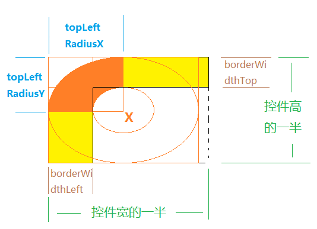

- Introduction
- 1. EMP5.4技术白皮书
- 2. EMP 安全
- 3. Release Note
- 4. EMP产品已知问题列表
-
5.
EMP界面开发规范
- 5.1. 变更记录
- 5.2. FAQ
- 5.3. CSS样式
- 5.4. 属性
-
5.5.
界面标签
- 5.5.1. 控件支持属性和样式对照表
-
5.5.2.
基础标签
- 5.5.2.1. A
- 5.5.2.2. B & Strong
- 5.5.2.3. Body
- 5.5.2.4. Br
- 5.5.2.5. Div
- 5.5.2.6. Form
- 5.5.2.7. I & Em
- 5.5.2.8. Img
- 5.5.2.9. InputButton
- 5.5.2.10. InputCheckbox
- 5.5.2.11. InputHidden
- 5.5.2.12. InputPassword
- 5.5.2.13. InputRadio
- 5.5.2.14. InputSegment
- 5.5.2.15. InputSwitch
- 5.5.2.16. InputText
- 5.5.2.17. Label
- 5.5.2.18. Richtext
- 5.5.2.19. Select & Option
- 5.5.2.20. Table & Tr & Td & Th
- 5.5.2.21. Webview
- 5.5.3. SDK定制说明
- 5.5.4. 定制标签
- 5.6. 布局与刷新
-
5.7.
Lua
-
5.7.1.
基础Lua库
- 5.7.1.1. accelerometer
- 5.7.1.2. audio
- 5.7.1.3. corp
- 5.7.1.4. database
- 5.7.1.5. document
- 5.7.1.6. file
- 5.7.1.7. gesture
- 5.7.1.8. gps
- 5.7.1.9. history
- 5.7.1.10. http
- 5.7.1.11. json
- 5.7.1.12. kv
- 5.7.1.13. location
- 5.7.1.14. offline
- 5.7.1.15. qrcode
- 5.7.1.16. screen
- 5.7.1.17. system
- 5.7.1.18. timer
- 5.7.1.19. tls
- 5.7.1.20. utility
- 5.7.1.21. video
- 5.7.1.22. window
- 5.7.2. 界面标签支持的Lua接口
- 5.7.3. 动画
- 5.7.4. RYTL脚本库
-
5.7.1.
基础Lua库
- 5.8. javascript
- 5.9. 事件
- 6. EMP开发配置
- 7. Migrate
- 8. EWP5.4管理后台功能说明文档
- 9. EWP API
-
10. EWP DEMO
- 10.1. redis缓存示例
- 10.2. redis数据存储示例
- 11. EWP Manual
- Published using GitBook
CSS
1 全局样式
1.1 bottom
指定控件下边界Y坐标，此坐标相对于父控件。top、bottom为互斥的样式，针对同一个控件不能同时指定top和bottom。
@value 10px 样式值必须指明单位px
@see top
1.2 display
指定控件的可视状态。
@value none/block
当值为none时，表示控件不可见，且不占位，即不参与布局计算。
当值为block时，表示控件可见。
@default block
注：通常控件的显示和隐藏都会导致页面布局的变化，因此当控件的可视属性变化时，需要通过页面刷新功能将页面重新布局。当然如果通过样式将控件坐标都控制在恰当的位置，而控件的显示与隐藏不会操作页面显示错误的话，则不需要重新布局。
如果在一次操作中，改变了多个控件的display样式，建议在所有的样式设置结束后再reload页面。
@see location:reload()
同时hide属性也可以控制控件的隐藏与显示，与display功能相同。当同一个控件同时设置了display与hide时，hide属性将失效。
当与visibility样式同时出现，visibility覆盖display样式，display不起作用
1.3 height
指定控件高度
@value 10px 样式值必须指明单位px
@see width
1.4 left
指定控件左侧X坐标，此坐标相对于父控件。left、right为互斥的样式，针对同一个控件不能同时指定left和right。
@value 10px 样式值必须指明单位px
@see right
1.5 position
指定控件的显示状态。
@value fixed/static
@default static
fixed
当值为fixed时，表示控件位置固定，不会跟随页面滑动而动。此值仅对body的第一个和最后一个控件起作用。当此样式值作用于第一个控件时，该控件会自动的置于页面最上端。当此样式值作用于最后一个控件时，该控件被置于页面的最低端。这种情况下样式中的top、bottom是不起作用的，但是left和right样式依然起作用。
同时被设置为fixed的控件相当于block元素，会独占一行显示。
static
当值为static时，控件为正常显示，不做特殊处理
toplevel
当值为toplevel时，控件将被固定在页面上指定的位置，且不会跟随页面滑动而移动。使用此值时需要制定控件的top、left坐标，否则将会默认显示在左上角。top、left值相对于body左上角。
注：toplevel的控件不参与布局算法。
注:toplevel控件与fixed控件重叠时, toplevel控件遮挡fixed控件.即toplevel控件在最上层.
1.6 right
指定控件右侧X坐标，此作为相对于父控件。left、right为互斥的样式，针对同一个控件不能同时指定left和right。
注: 如果控件设置right值,则同时需要设置其父控件的width.left,right 样式
@value 10px 样式值必须指明单位px
@see left
1.7 top
指定控件上边界Y坐标，此坐标相对于父控件。top、bottom为互斥的样式，针对同一个控件不能同时指定top和bottom。
@value 10px 样式值必须指明单位px
@see bottom
1.8 width
指定控件宽度
@value 10px 样式值必须指明单位px
@see height
2 其他样式
2.1 background-color
指定控件背景色，如div背景色。支持色值格式#RGB(#RRGGBB);
@value #RRGGBB
注:
- 当控件有边框时，背景色/背景图/渐变背景色的边界不能超出边框的范围。
- 对于同一个控件，背景色、背景图、渐变色只需要设置其中一种。当设置多个时，会以背景色、渐变色、背景图的顺序依次覆盖前者。
2.2 background-image
指定控件背景图
@value url(imageurl)
支持三种格式:
- url(image.png)
- url(local:image.png)
- url(http:// | https:// | ewp_local://)
1和2表示从客户端本地获取图片，使用图片路径*.png或者前面有local指示，例如：local:*.png。
图片获取优先级为:插件资源 > 离线下载资源 > 预置资源 > file：write写出的资源 > 安装包资源。
3的格式为从服务器请求图片。客户端通过请求EWP的/map/get_pic接口，将url中的内容上传服务器，由服务器返回远程图片。
注:
- 当控件有边框时，背景色/背景图/渐变背景色的边界不能超出边框的范围。
- 对于同一个控件，静态设置时，背景色、背景图、渐变色只需要设置其中一种。当设置多个时，会以背景色、渐变色、背景图的顺序依次覆盖前者。但这三个样式属于互斥样式，通过lua动态设置时，后设置的生效。
- 图片文件不存在时，控件背景图显示空。通过lua设置时，已存在的背景也需要被覆盖.
2.3 border
指定控件的边框样式
可以按顺序设置如下样式效果：
border-width 指定边线的宽度，如10px;默认值为1px;
border-style 指定边线的类型，目前仅支持solid;
border-color 指定边线的颜色，格式#FF0000;
如果不设置其中的某个值，也不会出问题，比如 border:solid #ff0000; 也是允许的。
例: border: 10px solid #FF0000;
2.4 border-radius
设置控件四个边的圆角半径。border-radius与border样式一样类似，会受到border属性控制，当border='0'时，border-radius不显示。
格式:border-radius: 25px 10px 0px 10px
四个圆角半径的值顺序为：top_left、top-right、bottom-right、bottom-left。
如果要四个角的圆角值相同，可以用一个值表示。
如果要让四个角圆角弧度不一样，需要按顺序写出四个值。
例1: border-radius: 25px 10px 0px 10px; 分别指定四个圆角值
例2: border-radius :25px; 指定四个圆角值相同
目前客户端只需要支持例子的两种写法。
2.4.1 边框圆角弧度的算法
首先边框宽度的算法，边框宽度由border样式指定，但由于我们的边框是内边框，因此左右两条边框不得大于控件宽度的一半，上下两条边框不得大于控件高度的一半。
borderWidthLeft = Math.min(控件宽度 / 2, 边框样式宽);
borderWidthRight = Math.min(控件宽度 / 2, 边框样式宽);
borderWidthTop = Math.min(控件高度 / 2, 边框样式高);
borderWidthBottom = Math.min(控件高度 / 2, 边框样式高);
接着是边框圆角的计算方法，以左上角为例。
先计算圆角支持的最大半径，最大值不可超过控件宽高的一半，X轴、Y轴可分开计算（即最终画出来的弧度不一定是圆的一部分，而是椭圆的一部分）：
mMaxRadiusX = 控件宽度 / 2 - borderWidthLeft / 2;
mMaxRadiusY = 控件高度 / 2 - borderWidthTop / 2;
然后计算实际圆角半径：
topLeftRadiusX = Math.min(mMaxRadiusX, 左上角圆角样式半径);
topLeftRadiusY = Math.min(mMaxRadiusY, 左上角圆角样式半径);
最后绘制圆角。绘制的中心点为，以左上为(0,0)点，(topLeftRadiusX,topLeftRadiusY)所在的点位。根据圆角半径是否大于边框宽度，分情况绘制：
if (topLeftRadiusX < borderWidthLeft || topLeftRadiusY < borderWidthTop) {
// 这种情况下，边框会盖住圆角，因此使用涂满的绘制方式，如下图1
RectF arc1 = new RectF(0, 0, topLeftRadiusX * 2, topLeftRadiusY * 2);
paint.setStyle(Paint.Style.FILL);
canvas.drawArc(arc1, 180, 90, true, paint);
} else {
// 这种情况下，边框不会盖住圆角，使用线的方式绘制即可，如下图2
RectF arc1 = new RectF(borderWidthLeft / 2, borderWidthTop / 2, topLeftRadiusX * 2 - borderWidthLeft / 2, topLeftRadiusY * 2 - borderWidthTop / 2);
paint.setStyle(Paint.Style.STROKE);
canvas.drawArc(arc1, 180, 90, false, paint);
}
图1：

图2：

2.5 color
控件文本颜色，如按钮上显示的文字颜色，支持色值格式#RGB(#RRGGBB);
2.6 font-size
指定文本的字体大小。
@value 18px
例: font-size:18px;
注意:
- 当控件高度不足以显示一行字的时候，IOS系统是将文字垂直居中显示，上下截断。
- android系统是分情况处理，button为上对齐，下边截断，输入框为下对齐，上边截断。
2.7 font-style
指定文本的字体样式
@value normal/italic
normal：显示一个标准的字体样式。
italic：显示一个斜体的字体样式。（IOS7后不支持斜体）
@default normal
2.8 font-weight
指定文本是否显示粗体文字。
@value normal/bold
@default normal
2.9 filter
指定控件的渐变背景色样式。渐变色作为背景色的一种特殊形式。
值格式为filter:progid(startColorStr='#FFFFFF',endColorStr='#000000',gradientType='0',alpha='0.5')
startColorStr表示渐变色的起始颜色
endColorStr表示渐变色结束颜色
alpha表示渐变色透明度，如不指定该属性默认为不透明，即默认值为1。值被约束在[0.0-1.0]范围内，如果超过了这个范围，其计算结果将截取到与之最相近的值。
gradientType指定渐变的方向，值为0/1，0从上至下渐变。1从左至右渐变（如不指定该属性默认为从左至右渐变)
如果filter中只有alpha属性，就代表控件整体透明度。
例1:
filter:progid(startColorStr='#FFFFFF',
endColorStr='#000000',
gradientType='0',
alpha='0.5')
例2:
filter:progid(alpha='0.5';)
例3:
filter:progid(alpha='-1';)
filter:progid(alpha='0';)
这两个方式会出现相同的效果
注:
- 当控件有边框时，背景色/背景图/渐变背景色的边界不能超出边框的范围。
- 对于同一个控件，静态设置时，背景色、背景图、渐变色只需要设置其中一种。当设置多个时，会以背景色、渐变色、背景图的顺序依次覆盖前者。但这三个样式属于互斥样式，通过lua动态设置时，后设置的生效。
- 对于不写起始或结束颜色这种不规范的写法，客户端不做处理。
2.10 inline-block
指定控件是否为块级元素。
目前只针对<div>标签
@value inline/block
当值为block时，控件为块级元素
当值为inline时，控件为内联元素
@default block
块级元素的含义:块级元素会独占一行。因此它的后一个控件也会在它的下一行显示。
2.11 margin-top
只对柱状图或折线图起作用，用于设定纵向刻度轴或横向刻度轴的刻度间隔。??
@value 40px
2.12 text-align
指定控件中文字的对齐方式
@value left/center/right
left:表示文字左对齐
center:表示文字居中显示
right:表示文字右对齐
@default left
2.13 visibility
指定元素是否可见。即使不可见的元素也会占据页面上的空间。请使用 display样式来创建不占据页面空间的不可见元素。
@value visible/hidden
visible: 元素是可见的。
hidden: 元素是不可见的。
@default visible
注：当与display样式同时出现，visibility覆盖display样式，display不起作用。
3 样式的定义
格式: .css {name:value;}
.css 为样式名，{}中为样式内容。
样式(css)支持两种定义方式，元素标签名和类选择器。
3.1 元素选择器
元素选择器，样式名与html某个元素名相同。表示此XHTML页面中的同名元素都遵循该样式。
示例：
HTML: <a href="http://www.rongyitong.com/">ryt</a>
CSS: .a {color:#ff0000;display:block; font-size:18px}
3.2 类选择器
类选择器，在html页面中通过在标签中加入属性class='classname'来引入样式。类选择器优先级高于元素选择器。
HTML: <a class="important" href="http://www.rongyitong.com/">ryt</a>
CSS: .important {color:#ffff00; font-size:20px; }
注意：* 如果一个标签同时出现两个选择器作用同一标签，类选择器的属性覆盖标签选择器的相同的属性。
3.3 伪类
EMP借助html伪类的语法来实现控件的点击等效果的样式设置。
通过给样式名加后缀的方式指定控件的点击样式或不可点击样式。样式名包括元素选择器和类选择器。
如button:active、button.inactive。
.button:active表示点击某button的一瞬间此Button所应用的样式
.button:inactive表示某button的属性enable="false"时所应用的样式
css:
.button {background-color:#ff0000;}
.button1 {color:#00ffff;}
.button2 {width:100px;}
.button:active {background-color:#0000ff;color:#00ff00}
.button1:active {background-color:#00ff00;}
html:
<input type='button' class='button1,button2'/>
此时button的正常样式为button1，button2三个样式的组合。
而button的点击样式为在button正常样式的基础上，再应用button1.active样式的组合。
支持伪类的控件button，a。
4 样式合并
控件可以指定多了样式，例: class='css1,css2'。
样式合并将class中指定的样式合并，生成最终的样式。
合并的原则为:
- 按照元素选择器，类选择器的顺序依次合并样式各属性。类选择器优先级大于元素选择器。
- 当有多个类选择器时，按照书写顺序依次合并样式各属性。列表中后面的样式优先级大于前面的样式。
- 样式合并时，如果有相同属性的样式，优先级高的样式属性替换优先级低的样式属性。
- 当有相同名称的选择器时，按照书写顺序，后面的选择器替换前面的同名选择器
如一个控件中的class中有多个值如下：
<a class="a1,a2,a3" href="http://www.rongyitong.com/">ryt</a>
CSS: .a1 {color:#ff0000;display:block; font-size:18px;}
CSS: .a2 {color:#00ff00; font-size:19px;background-color:#cccccc;}
CSS: .a3 {color:#0000ff;display:block; font-size:20px;}
最终的样式：
{ color:0000ff;display:block; font-size:20px; background-color:#cccccc;}
以最后一个样式的属性为准，如果前面有的，而最后的类选择器中没有此属性的话，需要继承前面的样式。
当样式定义中既存在与标签名同名的样式定义，也存在对单独控件应用的样式，则这两个样式也会合并。
5 外部的样式
样式表可以引用外部的样式文件，使用标准的link标签，同时需置于head标签中。外部的样式文件可单独存在，也可与style标签可同时存在，同时不限定外部样式文件个数。link标签中只有两个属性：ref标签文件地址，type标签文件类型，type值目前只有"text/css"。通过ref获取样式文件时，需满足一下规则：读取文件的优先级顺序为：插件资源 > 离线下载资源 > 预置资源 > file：write写出的资源 > 安装包资源。
例: <link ref='login.css' type='text/css'/>
6 样式替换
由于外部样式的引入,导致在客户端中存在多个样式表. 当这些样式表中存在同名样式时,按照样式的优先级顺序,优先级高的样式会替换优先级低的样式.同样式合并的第四条.
7 样式的继承
如果父节点的样式中定义了子节点样式没有定义的CSS属性，那么该CSS属性对子节点起作用，适用于所有子节点，包括内部嵌套的子节点。
可以继承的样式:font-size、font-weight、color、font-style。
说明：
.div {font-size:20px;color:#ff0000;width:100px;}
.label {color:#ffff00;}
<div>
<label>font-size继承自div,color使用label中定义的样式,width不继承</label>
</div>
上面label的最终样式为
{font-size:20px;color:#ffff00;}
| Date | Note | Modifier |
|---|---|---|
| 2014-11-28 | CSS | lin.jitao |
| 2015-04-08 | 补充伪类样式说明 | lin.jitao |
| 2015-08-17 | 补充伪类样式说明 | chai.lixin |
| 2015-09-04 | text-align样式，关于其相对于父控件的对齐算法，不符合 | |
| html标准规范，取消 | zhou.changjin | |
| 2015-09-07 | 增加border-radius算法，调整各样式以字母顺序排列，同时增加相关样式的引用链接 | zhou.changjin |
| 2015-09-17 | 增加背景色、背景图、渐变色通过lua动态设置的优先级说明 | zhou.changjin |
| 2015-10-12 | 增加背景图图片文件不存在时的说明 | zhou.changjin |